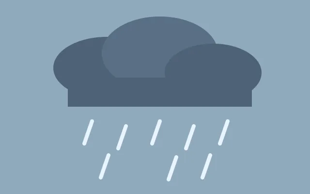
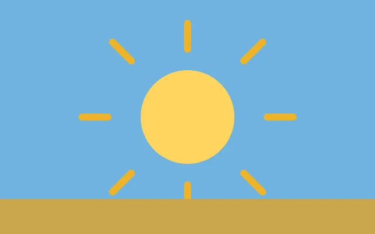

Chuva de verão

De outubro a março, a região vive a estação chuvosa. As chuvas costumam vir em pancadas, geralmente no fim da tarde.
Atualizado em .

De outubro a março, a região vive a estação chuvosa. As chuvas costumam vir em pancadas, geralmente no fim da tarde.
Atualizado em .

De abril a setembro chove pouco e o ar fica seco. Nessa época, beber bastante água faz diferença.
Atualizado em .
Quando uma massa de ar frio avança, a temperatura cai de uma hora para outra e o vento muda de direção.
Atualizado em .
| Nuvem | Altura | Aspecto | Tempo |
|---|---|---|---|
| Cirrus | Alta | Fios finos e brancos | Tempo estável |
| Cumulus | Baixa | Algodão com base reta | Tempo bom |
| Cumulonimbus | Muito alta | Torre escura e carregada | Tempestade |